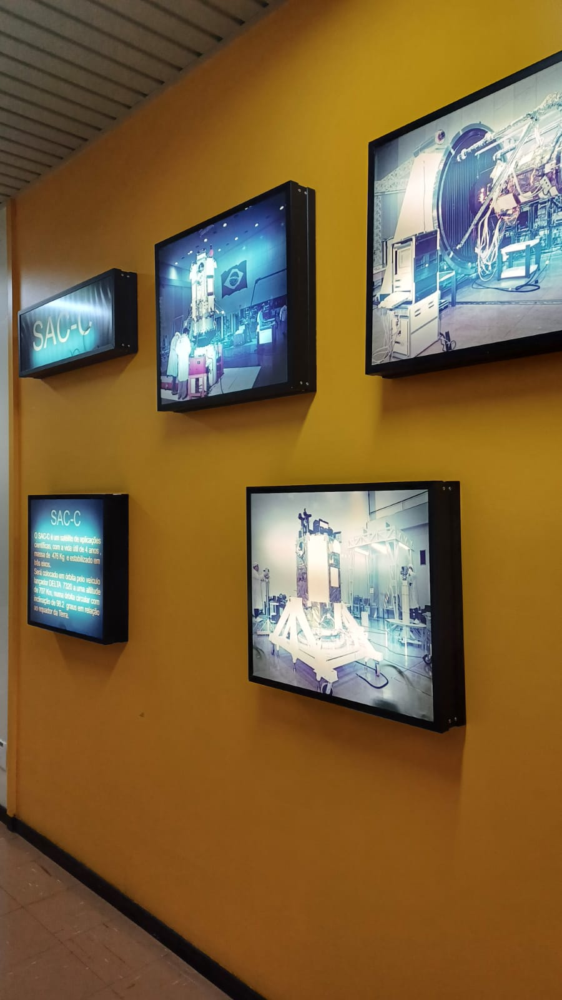
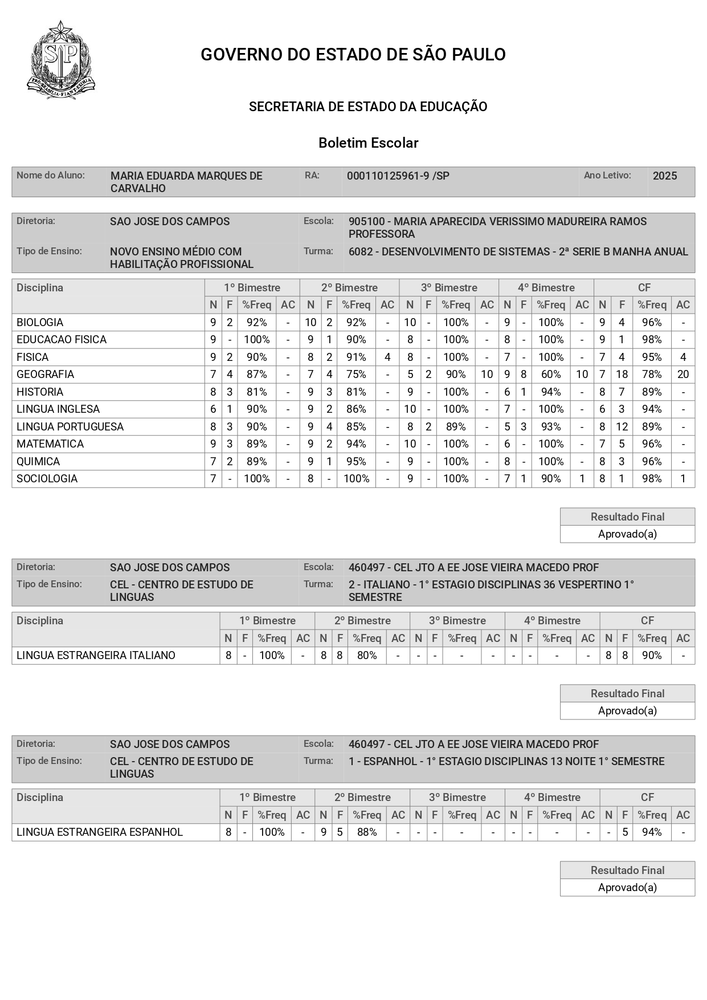

Medalha de Prata na OLISP
Participação na OLISP – Olimpíada Interpreta São Paulo, na qual conquistei medalha de prata. Essa conquista representa meu esforço e dedicação em atividades acadêmicas que estimulam interpretação, pensamento crítico e análise de conteúdos.
Visita Técnica ao INPE
Participação em uma visita técnica ao Instituto Nacional de Pesquisas Espaciais (INPE), realizada com a escola. Durante a visita foi possível conhecer projetos científicos e tecnologias voltadas à pesquisa espacial, ampliando meu contato com a área da ciência e da inovação.


Boletim Escolar 2° EM
Boletim escolar referente ao segundo ano do ensino médio, demonstrando meu desempenho nas disciplinas ao longo do ano letivo e minha continuidade no compromisso com os estudos e com o desenvolvimento acadêmico.